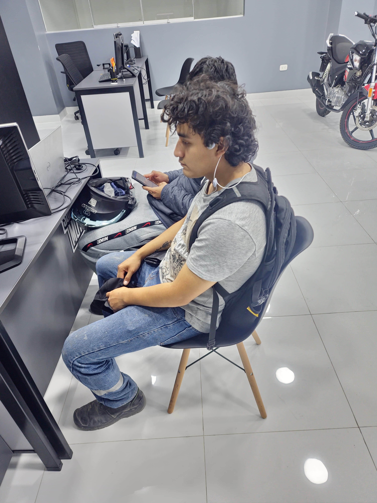

Inicio
Bienvenido a la pagina personal de Habibi Jordan Oppenheimer Jr.
Novedades
Las acciones más recientes de Habibi en su día a día.
02 de Junio del 2025, Habibi hizo el adelanto de su cuota mesual e inicial para sacar su moto marca "Camellaja 150", alución a su camello ya que lo extraña, y pronto lo veremos con su mantel encima rodando por las calles
Frases
Frases que Habibi o Oppenheimer Jr ha dicho en algun momento de su vida.
"El oxigeno es gas natural del aire" – Habibi Jordan Jr Oppenheimer, "Tengo gastritis, no puedo comer eso, solo me voy a comprar una gaseosa" – Habibi Jordan Jr Oppenheimer, "No puedo comer mucha grasa, compraré esta cancha con mantequilla" – Habibi Jordan Jr Oppenheimer
Recuerdos
Momentos "Especiales" que hemos vivido junto a Habibi Mohammed Jr.
"Cuando tiro el celular al piso para ver si era resistente", "Cuando casi malogra la cocina y el microondas de Jair", "Cuando le hablo a su perro y este no le hizo caso"
Biografía
Quieres conocer al Amo de las explosiones?, al experto en detonar edificios?, al millonario arabe que contiene muchos camellos?, que esperas para hacer click aquí.
Angel o conocido normalmente como Habibi, es mitad Peruano y mitad Arabe, actualmente tiene 23 años, cuenta con las mismas cromosomas como dice su edad, desde pequeño siempre le gusto la navidad y año nuevo debido a que le gustaba explotar cosas, le gustaba vestirse con manteles y toallas de preferencia blancas, en el colegio fue arquero, pero todo fue porque le recordaba en Arabia, cuando atrapaba las bombas y las devolvia lanzandolas al enemigo, hoy en dia le gusta andar en moto, pero no para moverse, si no porque le recuerda su vida anterior de cuando montaba camellos..